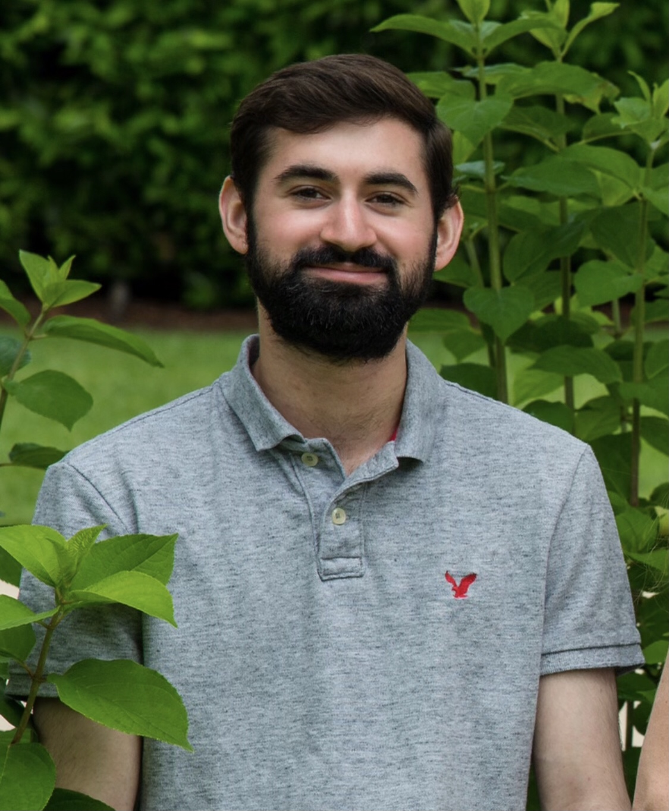

Hi! I'm Ryan Golant.
I'm a sixth-year Ph.D. candidate and a NASA FINESST Future Investigator in the Columbia University Department of Astronomy & Astrophysics. My research broadly addresses the interplay between magnetic fields and turbulence in hot and diffuse (collisionless) astrophysical plasmas. I'm particularly interested in the question of cosmic magnetogenesis, or how the first magnetic fields in our Universe came into being; my thesis work — advised by Professors Greg Bryan and Lorenzo Sironi — looks at how magnetic fields may arise from turbulence and how this could explain the presence of magnetic fields in the vast empty regions of the Universe called cosmic voids. To tackle this puzzle, I have gained expertise in both plasma physics and cosmology, employing both small-scale kinetic plasma simulations and large-scale cosmological simulations (and developing software for the latter). You can read more about my research here.
I'm also very interested in teaching, science communication, and public outreach. I have dedicated much of my grad school career thus far to pedagogical development, science writing, and community service leveraging my scientific expertise: I have designed, from scratch, my own course on astrophysical magnetic fields (and I will be teaching this course in Spring 2026), I have co-led a published education research study, I have organized pedagogy workshops and seminars for my department and for the university, I have written numerous articles on astronomy research for a broad audience, and I have led my department's public outreach program. You can read more about my teaching, writing, and outreach down below.
Beyond academics, I enjoy playing violin and video games, learning new things (my interests range from art history to mythology and folklore to jazz and music theory), and playing with my cat, Alfvie. If you have any cute cat photos or videos of your own, feel free to send them my way!.